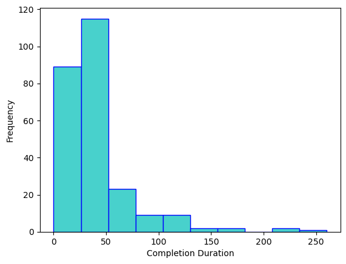
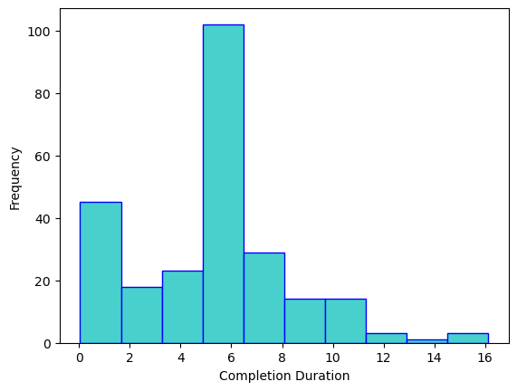

import pandas as pd
import numpy as np
import geopandas as gpd
from sklearn.model_selection import train_test_split, KFold, cross_val_score
from sklearn.linear_model import LinearRegression
from sklearn.metrics import mean_squared_error, mean_absolute_error, r2_score
import statsmodels.api as sm
from statsmodels.stats.outliers_influence import variance_inflation_factor
import matplotlib.pyplot as pltModel 1: Completed Complaints
complaints = pd.read_csv('../Data/complaints_dummy_variables.csv')complaints.head()| Date/Time Opened | Date/Time Closed | break_deduction | deductions_or_benefits | final_paycheck | leave_or_vacation_pay | minimum_wage | misclassification | overtime | payroll_records | ... | Unclear | issue_count | cross_ordinance | employ_cannot_pay | employer_unreachable | evidence_mentioned | joint_employer_or_intermediary | long_or_repeated_period | multiple_workers | description_quality | |
|---|---|---|---|---|---|---|---|---|---|---|---|---|---|---|---|---|---|---|---|---|---|
| 0 | 2025-07-03 9:16:00 | 2025-07-24 15:36:00 | 0 | 0 | 0 | 1 | 0 | 0 | 0 | 1 | ... | 0 | 3 | 1 | 0 | 0 | 1 | 0 | 1 | 0 | 3.0 |
| 1 | 2025-07-03 14:19:00 | 2025-09-18 14:36:00 | 0 | 0 | 0 | 0 | 0 | 0 | 0 | 0 | ... | 0 | 1 | 0 | 0 | 1 | 0 | 0 | 0 | 0 | 2.0 |
| 2 | 2025-07-03 15:03:00 | 2025-08-08 11:22:00 | 0 | 0 | 0 | 0 | 0 | 0 | 0 | 0 | ... | 1 | 0 | 0 | 0 | 0 | 0 | 0 | 0 | 0 | NaN |
| 3 | 2025-07-03 16:36:00 | 2025-08-08 11:25:00 | 0 | 0 | 0 | 0 | 0 | 0 | 0 | 0 | ... | 0 | 1 | 0 | 0 | 0 | 0 | 0 | 0 | 1 | 2.0 |
| 4 | 2025-07-08 8:42:00 | 2025-08-28 15:58:00 | 0 | 0 | 1 | 0 | 0 | 0 | 0 | 0 | ... | 0 | 1 | 0 | 0 | 0 | 0 | 0 | 0 | 0 | 3.0 |
5 rows × 24 columns
complaints['closed_status'] = complaints['Date/Time Closed'].notnull()complaints['closed_status'] = complaints['closed_status'].astype(int)complaints['Date/Time Opened'] = pd.to_datetime(complaints['Date/Time Opened'], format = '%Y-%m-%d %H:%M:%S')
complaints['Date/Time Closed'] = pd.to_datetime(complaints['Date/Time Closed'], format = '%Y-%m-%d %H:%M:%S')complaints['completion_duration'] = complaints['Date/Time Closed'] - complaints['Date/Time Opened']complaints['completion_duration']0 21 days 06:20:00
1 77 days 00:17:00
2 35 days 20:19:00
3 35 days 18:49:00
4 51 days 07:16:00
...
369 NaT
370 NaT
371 NaT
372 NaT
373 NaT
Name: completion_duration, Length: 374, dtype: timedelta64[ns]complaints.copy().drop(columns = ['Date/Time Opened', 'Date/Time Closed']).corr()| break_deduction | deductions_or_benefits | final_paycheck | leave_or_vacation_pay | minimum_wage | misclassification | overtime | payroll_records | regular_wages_unpaid | retaliation | ... | cross_ordinance | employ_cannot_pay | employer_unreachable | evidence_mentioned | joint_employer_or_intermediary | long_or_repeated_period | multiple_workers | description_quality | closed_status | completion_duration | |
|---|---|---|---|---|---|---|---|---|---|---|---|---|---|---|---|---|---|---|---|---|---|
| break_deduction | 1.000000 | -0.027668 | 0.003016 | 0.037910 | -0.042505 | -0.014864 | -0.035607 | 0.028509 | 0.025551 | 0.237395 | ... | 0.003830 | -0.012103 | -0.037403 | -0.028329 | -0.019294 | 1.000834e-01 | 0.117501 | -0.025976 | -0.018323 | -0.018356 |
| deductions_or_benefits | -0.027668 | 1.000000 | 0.006158 | -0.001262 | -0.049906 | 0.064242 | 0.054757 | 0.131274 | 0.052172 | 0.071459 | ... | 0.190640 | -0.024714 | 0.005237 | 0.275381 | -0.039397 | 3.625804e-02 | 0.031108 | 0.127581 | 0.089334 | 0.089287 |
| final_paycheck | 0.003016 | 0.006158 | 1.000000 | 0.085438 | -0.092113 | -0.061810 | -0.026199 | -0.011375 | -0.256953 | 0.023033 | ... | 0.117311 | 0.015950 | 0.242417 | 0.114533 | 0.046558 | -7.563762e-02 | -0.103506 | 0.159398 | 0.031418 | 0.031391 |
| leave_or_vacation_pay | 0.037910 | -0.001262 | 0.085438 | 1.000000 | -0.067862 | 0.097936 | 0.118604 | 0.120447 | 0.089274 | 0.042972 | ... | 0.700826 | 0.051069 | -0.016899 | 0.135757 | -0.000880 | 1.889982e-01 | 0.055120 | 0.183124 | -0.162422 | -0.162427 |
| minimum_wage | -0.042505 | -0.049906 | -0.092113 | -0.067862 | 1.000000 | 0.085480 | 0.066319 | 0.018006 | -0.093791 | 0.026407 | ... | -0.005006 | -0.037966 | -0.088834 | 0.075808 | -0.060523 | 3.222353e-02 | 0.151944 | 0.056457 | -0.029155 | -0.029092 |
| misclassification | -0.014864 | 0.064242 | -0.061810 | 0.097936 | 0.085480 | 1.000000 | -0.039058 | -0.047224 | -0.037022 | 0.128840 | ... | 0.102412 | -0.013276 | -0.041029 | 0.005645 | -0.021164 | 2.951201e-02 | -0.009998 | 0.059383 | -0.001942 | -0.001972 |
| overtime | -0.035607 | 0.054757 | -0.026199 | 0.118604 | 0.066319 | -0.039058 | 1.000000 | 0.092545 | 0.008705 | 0.062414 | ... | 0.122799 | -0.031805 | -0.032645 | 0.082247 | 0.008556 | 1.007451e-01 | 0.064027 | 0.130438 | -0.093006 | -0.092895 |
| payroll_records | 0.028509 | 0.131274 | -0.011375 | 0.120447 | 0.018006 | -0.047224 | 0.092545 | 1.000000 | 0.099121 | 0.182637 | ... | 0.117523 | -0.038454 | 0.050476 | 0.370869 | -0.061300 | 1.436034e-01 | 0.311430 | 0.215049 | -0.075746 | -0.075773 |
| regular_wages_unpaid | 0.025551 | 0.052172 | -0.256953 | 0.089274 | -0.093791 | -0.037022 | 0.008705 | 0.099121 | 1.000000 | 0.110851 | ... | 0.075394 | 0.102275 | 0.110616 | 0.175800 | 0.072569 | 3.667219e-01 | 0.217449 | 0.177383 | -0.130311 | -0.130259 |
| retaliation | 0.237395 | 0.071459 | 0.023033 | 0.042972 | 0.026407 | 0.128840 | 0.062414 | 0.182637 | 0.110851 | 1.000000 | ... | 0.157508 | -0.029003 | -0.089630 | 0.190594 | 0.017809 | 2.106052e-01 | 0.068923 | 0.209659 | -0.092389 | -0.092371 |
| tips | 0.053300 | 0.064398 | -0.063868 | -0.064411 | 0.018253 | -0.037020 | -0.088685 | 0.200072 | -0.014941 | 0.112273 | ... | -0.036597 | -0.030145 | 0.009821 | 0.127820 | -0.048055 | 7.486581e-02 | 0.307715 | 0.143003 | -0.096816 | -0.096786 |
| training_or_off_clock | -0.025402 | 0.005187 | 0.025292 | 0.011587 | -0.039841 | -0.027864 | 0.025031 | 0.077118 | -0.058599 | -0.011272 | ... | -0.005984 | -0.022689 | 0.150251 | 0.129619 | 0.043403 | -9.396627e-18 | -0.043937 | 0.128524 | -0.067205 | -0.067216 |
| Unclear | -0.072245 | -0.120994 | -0.300430 | -0.188965 | -0.226623 | -0.079248 | -0.168509 | -0.211189 | -0.392753 | -0.173122 | ... | -0.251916 | -0.064530 | -0.178930 | -0.315788 | -0.065876 | -3.301967e-01 | -0.278282 | -0.528215 | 0.189981 | 0.189975 |
| issue_count | 0.131306 | 0.301206 | 0.233477 | 0.410555 | 0.230137 | 0.136134 | 0.337948 | 0.539210 | 0.381048 | 0.469971 | ... | 0.414052 | 0.006321 | 0.115380 | 0.467821 | 0.002385 | 3.554536e-01 | 0.319815 | 0.533240 | -0.187848 | -0.187800 |
| cross_ordinance | 0.003830 | 0.190640 | 0.117311 | 0.700826 | -0.005006 | 0.102412 | 0.122799 | 0.117523 | 0.075394 | 0.157508 | ... | 1.000000 | 0.016750 | 0.010573 | 0.252850 | -0.037041 | 2.024847e-01 | 0.071405 | 0.239478 | -0.104778 | -0.104795 |
| employ_cannot_pay | -0.012103 | -0.024714 | 0.015950 | 0.051069 | -0.037966 | -0.013276 | -0.031805 | -0.038454 | 0.102275 | -0.029003 | ... | 0.016750 | 1.000000 | 0.323590 | 0.041973 | 0.143901 | 3.604686e-03 | 0.144103 | 0.048320 | -0.093989 | -0.094000 |
| employer_unreachable | -0.037403 | 0.005237 | 0.242417 | -0.016899 | -0.088834 | -0.041029 | -0.032645 | 0.050476 | 0.110616 | -0.089630 | ... | 0.010573 | 0.323590 | 1.000000 | 0.119809 | 0.003652 | 3.819317e-02 | 0.047814 | 0.119217 | 0.008168 | 0.008167 |
| evidence_mentioned | -0.028329 | 0.275381 | 0.114533 | 0.135757 | 0.075808 | 0.005645 | 0.082247 | 0.370869 | 0.175800 | 0.190594 | ... | 0.252850 | 0.041973 | 0.119809 | 1.000000 | -0.040337 | 2.103268e-01 | 0.128113 | 0.371772 | -0.010262 | -0.010255 |
| joint_employer_or_intermediary | -0.019294 | -0.039397 | 0.046558 | -0.000880 | -0.060523 | -0.021164 | 0.008556 | -0.061300 | 0.072569 | 0.017809 | ... | -0.037041 | 0.143901 | 0.003652 | -0.040337 | 1.000000 | -9.194066e-02 | 0.042495 | 0.122898 | 0.044618 | 0.044637 |
| long_or_repeated_period | 0.100083 | 0.036258 | -0.075638 | 0.188998 | 0.032224 | 0.029512 | 0.100745 | 0.143603 | 0.366722 | 0.210605 | ... | 0.202485 | 0.003605 | 0.038193 | 0.210327 | -0.091941 | 1.000000e+00 | 0.167531 | 0.349822 | -0.084626 | -0.084581 |
| multiple_workers | 0.117501 | 0.031108 | -0.103506 | 0.055120 | 0.151944 | -0.009998 | 0.064027 | 0.311430 | 0.217449 | 0.068923 | ... | 0.071405 | 0.144103 | 0.047814 | 0.128113 | 0.042495 | 1.675307e-01 | 1.000000 | 0.171615 | -0.141167 | -0.141147 |
| description_quality | -0.025976 | 0.127581 | 0.159398 | 0.183124 | 0.056457 | 0.059383 | 0.130438 | 0.215049 | 0.177383 | 0.209659 | ... | 0.239478 | 0.048320 | 0.119217 | 0.371772 | 0.122898 | 3.498225e-01 | 0.171615 | 1.000000 | -0.161977 | -0.161893 |
| closed_status | -0.018323 | 0.089334 | 0.031418 | -0.162422 | -0.029155 | -0.001942 | -0.093006 | -0.075746 | -0.130311 | -0.092389 | ... | -0.104778 | -0.093989 | 0.008168 | -0.010262 | 0.044618 | -8.462563e-02 | -0.141167 | -0.161977 | 1.000000 | 1.000000 |
| completion_duration | -0.018356 | 0.089287 | 0.031391 | -0.162427 | -0.029092 | -0.001972 | -0.092895 | -0.075773 | -0.130259 | -0.092371 | ... | -0.104795 | -0.094000 | 0.008167 | -0.010255 | 0.044637 | -8.458065e-02 | -0.141147 | -0.161893 | 1.000000 | 1.000000 |
24 rows × 24 columns
complaints.to_csv('first.csv')complaints['completion_duration'] = complaints['completion_duration'].dt.total_seconds()/86400complaints['description_blank'] = complaints['description_quality'].isna().astype(int)complaints['description_quality'] = complaints['description_quality'] + 1complaints['description_quality'] = complaints['description_quality'].fillna(0)complaints = pd.get_dummies(complaints, columns = ['description_quality'], dtype = int)complaints.columnsIndex(['Date/Time Opened', 'Date/Time Closed', 'break_deduction',
'deductions_or_benefits', 'final_paycheck', 'leave_or_vacation_pay',
'minimum_wage', 'misclassification', 'overtime', 'payroll_records',
'regular_wages_unpaid', 'retaliation', 'tips', 'training_or_off_clock',
'Unclear', 'issue_count', 'cross_ordinance', 'employ_cannot_pay',
'employer_unreachable', 'evidence_mentioned',
'joint_employer_or_intermediary', 'long_or_repeated_period',
'multiple_workers', 'closed_status', 'completion_duration',
'description_blank', 'description_quality_0.0',
'description_quality_1.0', 'description_quality_2.0',
'description_quality_3.0', 'description_quality_4.0'],
dtype='object')complaints = complaints.drop(columns = 'description_blank')plt.hist(complaints['completion_duration'], color = 'mediumturquoise', edgecolor = 'blue')
plt.xlabel('Completion Duration')
plt.ylabel('Frequency')
plt.show()
Creating Model
open_cases = complaints.loc[complaints['closed_status'] == 0]
complaints_m1 = complaints.drop(open_cases.index)
complaints_m1 = complaints_m1.drop(columns = ['Date/Time Opened', 'Date/Time Closed'])complaints_m1.corr().to_csv('model1_corr.csv')complaints_m1 = complaints_m1.rename(columns = {'Unclear':'ambiguous_primary'})complaints_m1['ambiguous_primary']0 0
1 0
2 1
3 0
4 0
..
341 0
344 1
355 0
359 0
364 0
Name: ambiguous_primary, Length: 252, dtype: int64np.mean(complaints_m1['completion_duration'])np.float64(37.379822530864196)# complaints_m1.corr()complaints_m1 = complaints_m1.drop(columns = ['closed_status',
'issue_count',
'description_quality_0.0'])
# Chat found that issue_count was giving other features tremendous VIF and had high VIF toocomplaints_m1.columnsIndex(['break_deduction', 'deductions_or_benefits', 'final_paycheck',
'leave_or_vacation_pay', 'minimum_wage', 'misclassification',
'overtime', 'payroll_records', 'regular_wages_unpaid', 'retaliation',
'tips', 'training_or_off_clock', 'ambiguous_primary', 'cross_ordinance',
'employ_cannot_pay', 'employer_unreachable', 'evidence_mentioned',
'joint_employer_or_intermediary', 'long_or_repeated_period',
'multiple_workers', 'completion_duration', 'description_quality_1.0',
'description_quality_2.0', 'description_quality_3.0',
'description_quality_4.0'],
dtype='object')Train-Test Split
X = complaints_m1.drop(columns = ['completion_duration'])
y = complaints_m1['completion_duration']X_train, X_test, y_train, y_test = train_test_split(
X,
y,
test_size = 0.20,
random_state = 518
)model1 = LinearRegression()
model1.fit(X_train, y_train)
y_pred = model1.predict(X_test)
print("R²:", r2_score(y_test, y_pred))
print("MAE:", mean_absolute_error(y_test, y_pred))
print("RMSE:", np.sqrt(mean_squared_error(y_test, y_pred)))R²: -0.21614988170517702
MAE: 30.797938154605387
RMSE: 45.81190839452264# cross-validate then statsmodels, then try simpler models
# survivorship can come at the endkf1 = KFold(
n_splits=5,
shuffle=True,
random_state=518
)
cv_scores1 = cross_val_score(
model1,
X_train,
y_train,
cv=kf1,
scoring='r2'
)
cv_mae1 = -cross_val_score( # sklearn makes MAE negative automatically (convention), so this is reversing that
model1,
X_train,
y_train,
cv=kf1,
scoring = 'neg_mean_absolute_error' # just the name for MAE with sklearn
)
print(cv_scores1)
print('Mean CV R²:', cv_scores1.mean())
print('CV R² SD:', cv_scores1.std())
print(cv_mae1)
print('Mean CV MAE', cv_mae1.mean())[-0.30883655 -0.29330985 -0.56783515 0.22412779 0.06510664]
Mean CV R²: -0.1761494230949337
CV R² SD: 0.2839635502121657
[24.1760377 24.28903842 23.0575371 35.20266443 24.32264584]
Mean CV MAE 26.20958469983585Model 2: Completed Complaints
complaints_m1.columnsIndex(['break_deduction', 'deductions_or_benefits', 'final_paycheck',
'leave_or_vacation_pay', 'minimum_wage', 'misclassification',
'overtime', 'payroll_records', 'regular_wages_unpaid', 'retaliation',
'tips', 'training_or_off_clock', 'ambiguous_primary', 'cross_ordinance',
'employ_cannot_pay', 'employer_unreachable', 'evidence_mentioned',
'joint_employer_or_intermediary', 'long_or_repeated_period',
'multiple_workers', 'completion_duration', 'description_quality_1.0',
'description_quality_2.0', 'description_quality_3.0',
'description_quality_4.0'],
dtype='object')complaints_m2 = complaints_m1.copy()
complaints_m2.insert(1, 'issue_count', complaints.loc[complaints_m2.index, 'issue_count'])X2 = pd.DataFrame(complaints_m2['issue_count'])
y2 = pd.DataFrame(complaints_m2['completion_duration'])
X_train2, X_test2, y_train2, y_test2 = train_test_split(
X2,
y2,
test_size=0.2,
random_state=518
)
model2 = LinearRegression()
model2.fit(X_train2, y_train2)
kf2 = KFold(
n_splits=5,
shuffle=True,
random_state=518
)
cv_scores2 = cross_val_score(
model2,
X_train2,
y_train2,
cv=kf2,
scoring='r2'
)
cv_mae2 = -cross_val_score(
model2,
X_train2,
y_train2,
cv=kf2,
scoring = 'neg_mean_absolute_error'
)
print(cv_scores2)
print('Mean CV R²:', cv_scores2.mean())
print('CV R² SD:', cv_scores2.std())
print(cv_mae2)
print('Mean CV MAE', cv_mae2.mean())[-0.09138916 -0.09117464 -0.05258464 -0.02110085 0.04088883]
Mean CV R²: -0.04307209166438395
CV R² SD: 0.04953999458551809
[23.69775981 22.03430672 20.50026808 37.90399002 20.32122535]
Mean CV MAE 24.891509996406285Model 3: Completed Complaints
complaints_m3 = complaints.drop(open_cases.index)X3 = complaints_m3[['description_quality_1.0',
'description_quality_2.0',
'description_quality_3.0',
'description_quality_4.0'
]]
y3 = pd.DataFrame(complaints_m3['completion_duration'])
X_train3, X_test3, y_train3, y_test3 = train_test_split(
X3,
y3,
test_size=0.2,
random_state=518
)
model3 = LinearRegression()
model3.fit(X_train3, y_train3)
kf3 = KFold(
n_splits=5,
shuffle=True,
random_state=518
)
cv_scores3 = cross_val_score(
model3,
X_train3,
y_train3,
cv=kf3,
scoring='r2'
)
cv_mae3 = -cross_val_score(
model3,
X_train3,
y_train3,
cv=kf3,
scoring = 'neg_mean_absolute_error'
)
print(cv_scores3)
print('Mean CV R²:', cv_scores3.mean())
print('CV R² SD:', cv_scores3.std())
print(cv_mae3)
print('Mean CV MAE', cv_mae3.mean())[ 0.07532232 -0.13649017 -0.32741772 0.0024106 0.08954579]
Mean CV R²: -0.0593258371828171
CV R² SD: 0.15616136925341537
[21.33680849 22.47684987 21.04461793 38.16235397 19.34306635]
Mean CV MAE 24.4727393239761Model 4: Model 1 w/ Transformed Response
plt.hist(np.sqrt(complaints['completion_duration']), color = 'mediumturquoise', edgecolor = 'blue') # sqrt does better than log here
plt.xlabel('Completion Duration')
plt.ylabel('Frequency')
plt.show()
X4 = complaints_m1.drop(columns = ['completion_duration'])
y4 = np.sqrt(complaints_m1['completion_duration'])
X_train4, X_test4, y_train4, y_test4 = train_test_split(
X4,
y4,
test_size = 0.20,
random_state = 518
)
model4 = LinearRegression()
model4.fit(X_train4, y_train4)
kf4 = KFold(
n_splits=5,
shuffle=True,
random_state=518
)
cv_scores4 = cross_val_score(
model4,
X_train4,
y_train4,
cv=kf4,
scoring='r2'
)
cv_mae4 = -cross_val_score( # sklearn makes MAE negative automatically (convention), so this is reversing that
model4,
X_train4,
y_train4,
cv=kf4,
scoring = 'neg_mean_absolute_error' # just the name for MAE with sklearn
)
print(cv_scores4)
print('Mean CV R²:', cv_scores4.mean())
print('CV R² SD:', cv_scores4.std())
# MAE will be lower because of transformed response
print(cv_mae4)
print('Mean CV MAE', cv_mae4.mean())[-0.15056824 -0.31101226 -0.27539706 0.11019723 -0.16237313]
Mean CV R²: -0.15783069153042967
CV R² SD: 0.14778280482054326
[2.35564264 2.14707958 2.10063489 3.21064254 2.33906445]
Mean CV MAE 2.4306128205421507Model 5: Model 2 w/ Transformed Response
X5 = pd.DataFrame(complaints_m2['issue_count'])
y5 = pd.DataFrame(np.sqrt(complaints_m2['completion_duration']))
X_train5, X_test5, y_train5, y_test5 = train_test_split(
X5,
y5,
test_size=0.2,
random_state=518
)
model5 = LinearRegression()
model5.fit(X_train5, y_train5)
kf5 = KFold(
n_splits=5,
shuffle=True,
random_state=518
)
cv_scores5 = cross_val_score(
model5,
X_train5,
y_train5,
cv=kf5,
scoring='r2'
)
cv_mae5 = -cross_val_score(
model5,
X_train5,
y_train5,
cv=kf5,
scoring = 'neg_mean_absolute_error'
)
print(cv_scores5)
print('Mean CV R²:', cv_scores5.mean())
print('CV R² SD:', cv_scores5.std())
print(cv_mae5)
print('Mean CV MAE', cv_mae5.mean())[-0.029862 -0.04924927 -0.00338591 0.01050895 0.0216355 ]
Mean CV R²: -0.010070548217929121
CV R² SD: 0.026077376243866867
[2.27556662 1.91831422 2.0858943 3.34031755 1.98642842]
Mean CV MAE 2.321304222615912Model 6: Completed Complaints w/ Transformed Response
X6 = complaints_m1[['break_deduction', 'deductions_or_benefits', 'final_paycheck',
'leave_or_vacation_pay', 'minimum_wage', 'misclassification',
'overtime', 'payroll_records', 'regular_wages_unpaid', 'retaliation',
'tips', 'training_or_off_clock', 'cross_ordinance']]
y6 = np.sqrt(complaints_m1['completion_duration'])
X_train6, X_test6, y_train6, y_test6 = train_test_split(
X6,
y6,
test_size=0.2,
random_state=518
)
model6 = LinearRegression()
model6.fit(X_train6, y_train6)
kf6 = KFold(
n_splits=5,
shuffle=True,
random_state=518
)
cv_scores6 = cross_val_score(
model6,
X_train6,
y_train6,
cv=kf6,
scoring='r2'
)
cv_mae6 = -cross_val_score(
model6,
X_train6,
y_train6,
cv=kf6,
scoring = 'neg_mean_absolute_error'
)
print(cv_scores6)
print('Mean CV R²:', cv_scores6.mean())
print('CV R² SD:', cv_scores6.std())
print(cv_mae6)
print('Mean CV MAE', cv_mae6.mean())[-0.26059282 -0.01702955 0.02093476 0.10708634 -0.13404456]
Mean CV R²: -0.056729166975635945
CV R² SD: 0.12804790099634325
[2.50806245 1.94761806 2.0537506 3.18554931 2.30114721]
Mean CV MAE 2.3992255262201354